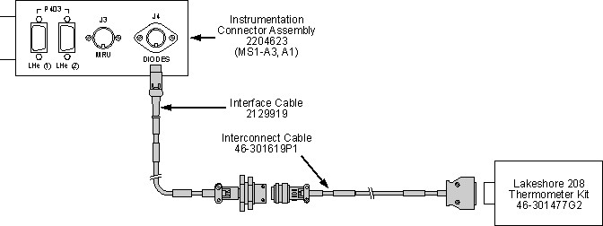
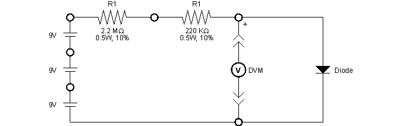
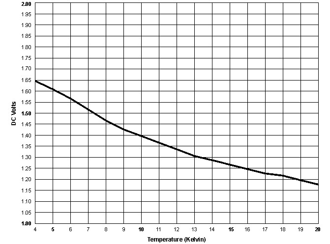
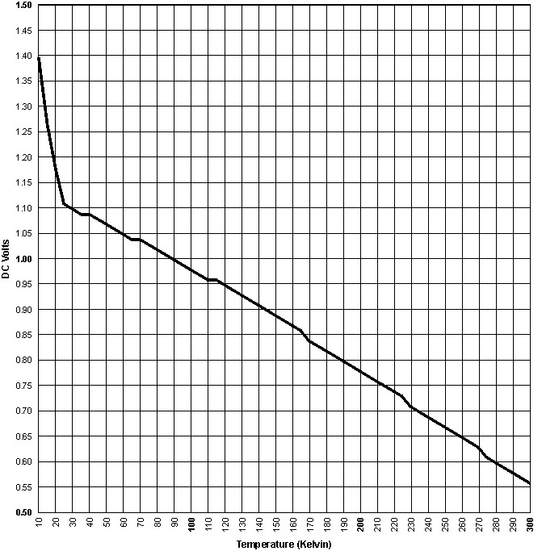
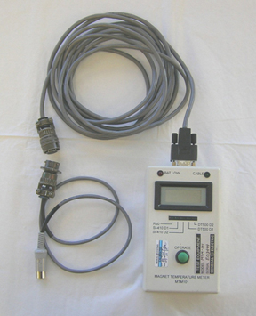
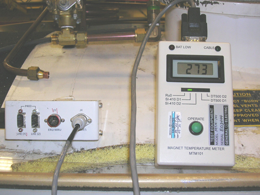

Operating Documentation
Direction 5500113, Rev# 3
Discovery MR450 1.5T Service Methods
Module Version 2.0, Version Date 2/4/10
Operating Documentation |
| Required Persons | Preliminary Reqs | Procedure | Finalization |
|---|---|---|---|
| 1 | Included in Procedure | 2 hours | Included in Procedure |
The magnet's electrical circuits must be verified to be in operating condition prior to filling or ramping. The Cryostat's temperature must be determined prior to filling. Magnet Commissioning and Operating Guidelines are stated in Magnet Functional Checks.
| Item | Qty | Effectivity | Part# | Manufacturer | |
|---|---|---|---|---|---|
| Lakeshore 208 Digital Thermometer Kit 46-301477G2 or Diode Box 46-317543G2 | 1 | - | 46-301477G2 or 46-317543G2 | - | |
| Digital Voltmeter | 1 | - | - | - | |
| Resistors as required to total 2.4 to 2.7 MΩ | Varies | - | - | - | |
| HDx Service Platform - Can use Universal Service Ladder/Platform 2319156 if service space ≥30 in. (762 mm) | 1 | - | 5155291 (or 2319156) | - | |
| Service Methods documentation for the magnet/enclosures (available through the Common Documentation Library at gehealthcare.com or your local GE Healthcare Service Representative) | 1 | - | - | - | |
| Item | Qty | Effectivity | Part# | Manufacturer |
|---|---|---|---|---|
| 9 Volt DC Batteries (if required) | 3 | - | - | - |
| Condition | Reference | Effectivity |
|---|---|---|
Removal of some magnet enclosure components may be required to complete the Magnet Commissioning Checks procedure. Refer to the appropriate document listed and the Service Methods documentation (available through the Common Documentation Library at gehealthcare.com or your local GE Healthcare Service Representative) before continuing if cover removal is required. | - | |
(continued) | - |
The magnet's electrical circuits must be verified to be in operating condition prior to filling or ramping.
Make sure Shim Lead is disengaged in conformance with Shim Lead Engagement and Disengagement.
Perform electrical checks in Magnet Functional Checks.
This section describes the procedures and equipment used to establish the temperature inside the Cryostat Helium Vessel. This temperature must be established in order to determine the cool down and liquid helium filling requirements of the Cryostat in the Cooling & Filling Procedure Determination section, prior to the magnet commissioning. LCC300 magnets are equipped with two temperature sensors requiring a 10 microampere current source with a stability of +0.005 percent. Sensor (Diode) 1 is mounted on top of the patient end of the Magnet Assembly. Sensor (Diode) 2 is mounted on the bottom of the service end of the Magnet Assembly. The Magnet Assembly is inside of the Helium Vessel. (These sensor diodes are identical to those found on the Coldhead Sleeve.)
| ||||
| The magnet temperature sensors are designed to be driven by a 10 microampere source. Some ohmmeters exceed this rating. Do NOT use any sensing or troubleshooting equipment that exceeds 10 microamperes. A voltmeter can also be used to troubleshoot the sensor circuit. | ||||
Verify that any sensing or troubleshooting equipment used does not exceed 10 microamperes.
Connect the Lakeshore Model 208 Digital Thermometer to the diode connector on Instrumentation Connector Assembly 2204623 (MS1-A3, A1) in conformance with the illustration below. Select Curve 6 (equivalent to DT 470, Curve 10).
Illustration 1: Cryostat Temperature Measurement Set-Up

Select the Diode to be monitored according to the table below.
Table 1: Helium Vessel Temperature Monitor Diodes
| Stage | Lakeshore 208 Thermometer Kit |
|---|---|
| Diode 1 | Select Channel #1 |
| Diode 2 | Select Channel #2 |
| NOTE: | A shorted sensor circuit will cause the meter to display a reading of approximately 400K, whereas an open sensor circuit will cause the meter display to flash. Check for problems with the instrumentation box connector and external wiring before deciding the temperature sensing diode as being defective. |
Record the Lakeshore 208 readout from the temperature sensing diodes in Magnet Commissioning Log.
If the Lakeshore 208 Thermometer Kit or Low Cost Temperature Diode Box are not available, the following temperature sensing circuit can be fabricated from commonly available components for temperature measurements.
Assemble three 9 VDC batteries and a series resistance totalling 2.4 to 2.7 MΩ as shown below. Adjust the resistance as required to obtain 10 µA ±1 µA current.
Illustration 2: Temperature Sensing Circuit

Connect a Digital Voltmeter (DVM) across the diode with the polarity shown above. See the illustration below for the pin polarities at the J4 Connector.
Illustration 3: Diode Polarities
Record the voltage reading on the DVM and determine the corresponding temperature reading from the two illustrations below.
Illustration 4: SI410 Diode Voltage to Temperature Conversion, 4K to 20K

Illustration 5: SI410 Diode Voltage to Temperature Conversion, 10K to 300K

The kit includes adaptor cables so this meter can be used on any GE magnet to determine the Magnet temperature. The illustration below shows the set-up used on current LCC and 3.0T magnets.
Illustration 6: MTM-101 Meter Set-Up for LCC Magnets

Plug the circular DIN connector into the Diode Connector on the Magnet Connector Assembly (MSI-A3, A1) in conformance with Cryostat Temperature Checkand as shown below.
Illustration 7: MTM-101 Meter Connected

To read the upper temperature diode, press the green button until the SI410D1 LED is lit, read the Kelvin temperature on the meter. (See the illustration above.)
To read the lower temperature diode, press the green button until the SI410D2 LED is lit, read the Kelvin temperature on the meter.
| NOTE: | Always keep a fresh set of batteries available and ensure the unit is in calibration. |
Measure and record the Diode Temperatures in conformance with Cryostat Temperature Check, Cryostat Temperature Check.
| ||||
| Do NOT proceed with Nitrogen Purge-Precool, Liquid Helium Fill, Preparations for Field Measurement, or initiate magnet ramping prior to establishing the Cryostat cooling and cryogen filling requirements in conformance with this section. | ||||
Use Table 2, the temperature readout obtained previously in Cryostat Temperature Check, and the reading from the Magnet Monitor installed in Magnet Monitor Installation to determine the Cryostat cooling and cryogen filling procedures required.
Table 2: Determination of Cooling/Filling Procedure by Diode Temperature
| Diode Temperature | Helium Level | Required Cryostat Cooling/Cryogen Filling Procedures | |||
|---|---|---|---|---|---|
| Nitrogen Purge-Precool | Liquid Helium Fill | ||||
| Gaseous Nitrogen Purge | Liquid Nitrogen Precool | Helium Purge | |||
| >220K | Empty | Yes | Yes | Yes | Yes |
| 100K to 220K | ― | Yes | Yes | Yes | |
| <100K | ― | ― | ― | Yes | |
| > 90% | No Action | ||||
No finalization steps.